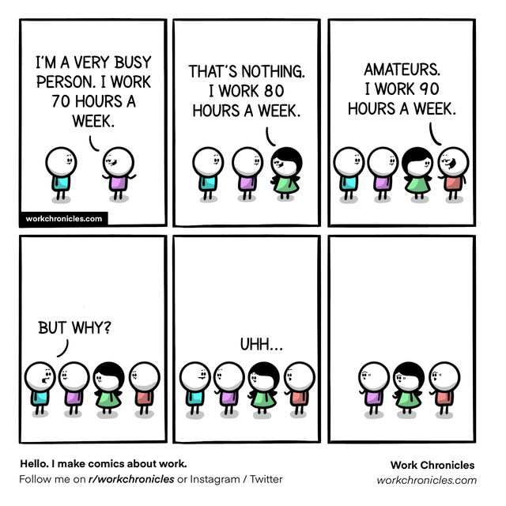

Bragging about hours worked per week seems to have become commonplace and proportional to one's worth, both to the company and themselves. (This is not to say that working long hours isn't valuable: it can be, especially if the employee is taking care of gating items or is one themselves, i.e., they are the only one that can perform a task (this points to poor management and structure, but that's for another discussion).) But why are people so proud about working so much when there's no requirement or urgency to do so?
Working long hours signals value to listeners, as stated above. If someone is working long hours, it probably means there's nobody else that can do it,
